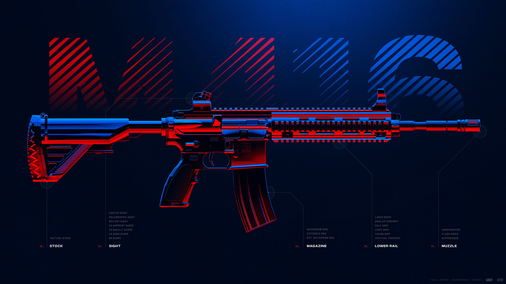
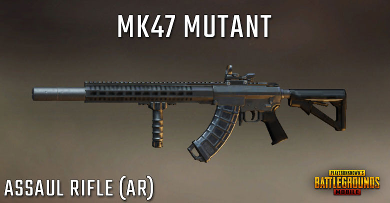

akm

The AKM is an assault rifle type weapon in BATTLEGROUNDS. The AKM (Avtomat Kalashnikova Modernizirovanny, lit. Modernized Kalashnikov Automatic Rifle) is an improved version of the original AK-47, featuring improvements and refinements in manufacturing and materials to create a modernized version of one of the most recognizable firearms in the world. A powerful assault rifle that uses 7.62mm ammunition, this rifle does more damage than the 5.56mm assault rifles and comes with a kick to match. It is best used in single-shot mode except when attempting to breach buildings with it.
M416

{kind=link}
The HK416, (referred to as the M416 in-game) is an assault rifle/carbine type weapon in BATTLEGROUNDS. A tactical rifle based on the discontinued XM8-project as an improvement of both the M16/AR-15 and the M4 Carbine, it integrates the short-stroke gas piston system from the G36 rifle for less recoil and increased reliability. Adopted by the militaries of several countries across the world, in BATTLEGROUNDS it proves very popular due to the number of attachments it can accept, allowing a great amount of flexibility
M16a4

The M16A4 is an assault rifle type weapon in BATTLEGROUNDS. Replacing the US military's M14 as its standard service rifle, the first M16s were introduced in 1964 during the Vietnam War where they quickly grew an infamous reputation for reliablity problems, amongst other issues. Feedback from battlefield experience was then used to refine and improve the gun over the years and as a result, many derivatives and variants of the M16 have been created, with the fourth generation M16A4 being the latest development. Widely adopted by militaries around the world, in BATTLEGROUNDS it proves to be an assault rifle more suited for longer range engagements.
SCAR-l

Making up for having the lowest bullet speed for an Assault Rifle, the SCAR-L is one of the lowest recoil guns in the game. Outfitting it with all compatible attachments and a 4x ACOG Scope makes it easy to use on full auto while scoped. It is widely known as the most effective long range assault rifle in the game, boasting an extremely high accuracy and damage. It can be fitted with a range of attachments with the most efficient combo being a 2x Scope and Vertical foregrip. Outfitting it with all compatible attachments and a 4x ACOG Scope makes it easy to use on full auto while scoped. It is widely known as the most effective long range assault rifle in the game, boasting an extremely high accuracy and damage. Rating: 9.1/10
groza
{kind=link}
The OTs-14 Groza (Russian: ОЦ-14 "Гроза", lit. '"Thunderstorm"') is a Russian selective fire bullpup assault rifle chambered for the 7.62×39 round and the 9×39mm subsonic round. It was developed in the 1990s at the TsKIB SOO (Central Design and Research Bureau of Sporting and Hunting Arms) in Tula, Russia. The weapon is colloquially known as OC-14 or OTs-14 "Groza" . The OTs-14-4A "Groza-4" has one derivative, the TKB-0239 (ТКБ-0239), also known as OTs-14-1A "Groza-1", chambered for the 7.62×39mm round. Attachments
aug
{kind=link}
AUG A3 (Armee Universal Gewehr - army universal rifle) is a typical assault rifle developed by the Austrian company "Steyr-Daimler-Puch" (now Steyr Mannlicher AG ). This assault rifle can only be found in airdrops. This weapon uses 5.56mm ammo.The Steyr AUG A3 is a Austrian bullpup assault rifle chambered in the 5.56 by 45mm NATO caliber. The AUG platform was created in 1978 and replaced the aging FAL rifle, which entered service in 1958. The AUG A3 variation was produced in 2004, and offered some improvements to the other variants of the rifle. Since then, nations such as Australia, New Zealand, and Ireland have adopted the platform for its modification and modern, sleek design.
qbz
{kind=link}
The QBZ is a bullpup assualt rifle in PlayerUnknown's Battlegrounds exlusive to Sanhok being the replacement for the SCAR-L in that map.
beryl m762
{kind=link}
The Beryl M762 is an Assault Rifle in PlayerUnknown's Battlegrounds that uses 7.62mm. The M762 can be described as a slightly inferior, non-air-drop-exclusive version of the Groza, with overall performance slotted between the Groza and AKM. The base damage of this gun is slightly lower than that of the other 7.62mm assault rifles, which is compensated by its fairly high rate of fire for a non-air-drop weapon. The vertical recoil of this compared to the AKM is slightly higher. A barrel, magazine, sight and grip can be attached to this weapon. Due to its high recoil and restrictive iron sights, equipping a grip (preferbly, the Vertical Grip) and a sight attachment is vital. Much like the AKM and Groza, using this gun for long-range engagements is not recommended.
mk47 mutant

{kind=link}
The Mk47 Mutant is a 2 round burst assault rifle that uses 7.62mm ammo.The Mk47 Mutant is an assault rifle firing 7.62mm ammunition and is specialized for medium-range engagements. With higher base damage and muzzle velocity than the AKM, Beryl M762, or Groza, the Mutant does the most damage per shot of any assault rifle, and is easier to use at long range than its other 7.62mm brethren. However, it also has the smallest magazine size of any assault rifle and lacks a full-auto mode, which makes it more difficult to use in close-quarters engagements.
g36c
{kind=link}
The G36C is an assault rifle/carbine type weapon exclusive to Vikendi, replacing the SCAR-L on that map in PlayerUnknown's Battlegrounds. Right at home in its central European origins, the G36C's damage per second is lower than its popular 5.56mm brother, the M416. But it makes up for what it lacks in DPS, with better control especially when engaging your enemies at short to medium range